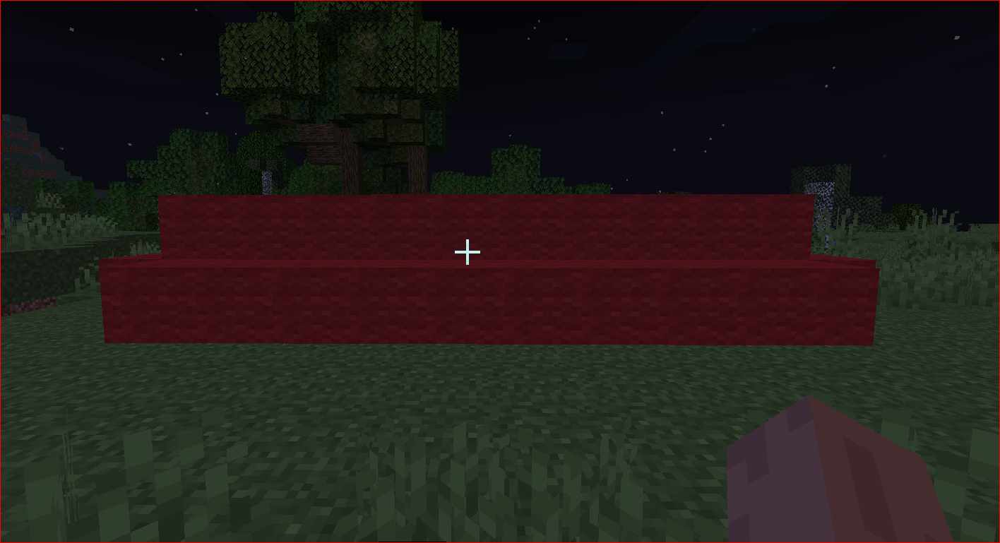
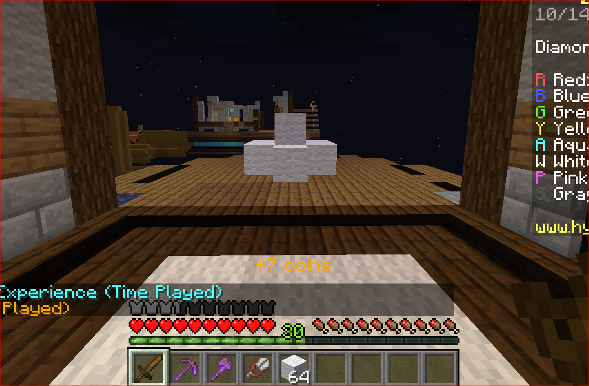

You can trick a lot of players by using the "Hot Dog" stradegy. The "Hot Dog" stradegy is where you have your defense thin and long. If Its long enough players won't be able to know exaclty where the bed is.
Before you go to mid, you should always have a picaxe, axe, shears, and wool. These items help you destroy players beds.
Combo people by moving left and right reapeatidly, while your aiming at you opponent and if you get a chance place one block under there feet to making them stop sprinting.